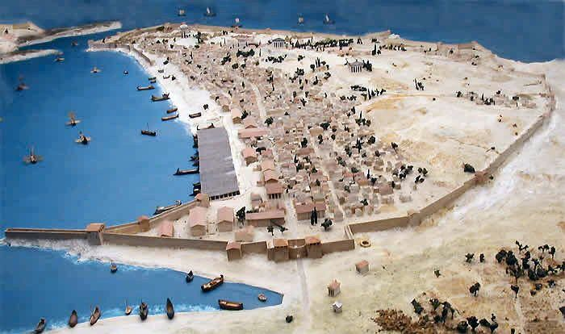
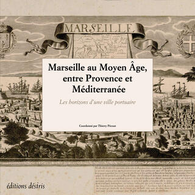
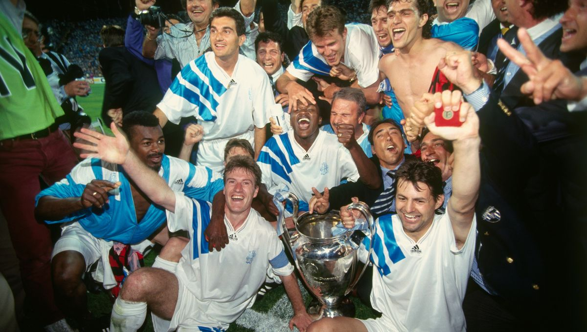

Marseille, fondée par les Grecs en 600 av. J.-C., est l'une des plus anciennes villes de France. Elle a joué un rôle majeur dans le commerce et les échanges culturels à travers les siècles.
L'Antiquité

Marseille, alors connue sous le nom de Massalia, était une importante ville portuaire de la Méditerranée, fondée par des marins grecs. Elle s'est rapidement développée grâce à son emplacement stratégique et à son commerce florissant avec les civilisations environnantes.
Le Moyen Âge

Au Moyen Âge, Marseille a continué à prospérer en tant que port commercial. La ville a été un point de rencontre pour les cultures et les commerçants de toute l'Europe. Son architecture et son urbanisme ont également été influencés par cette époque de croissance et de changement.
La Victoire en Ligue des Champions en 1993

Le 26 mai 1993 reste une date gravée dans l'histoire du football français, et particulièrement pour la ville de Marseille. Ce jour-là, l'Olympique de Marseille a remporté la Ligue des Champions, devenant ainsi le premier et jusqu'à présent, le seul club français à remporter ce prestigieux trophée. La finale, jouée contre l'AC Milan, s'est terminée sur le score de 1-0, grâce à un but de Basile Boli.
Cette victoire a marqué un sommet dans l'histoire du football marseillais, couronnant des années d'efforts et de passion. L'équipe, entraînée par Raymond Goethals, a su montrer sa force et sa détermination tout au long du tournoi. La joie et la fierté qu'elle a apportées à ses supporters et à la ville de Marseille ont été immenses, et l'événement est toujours célébré comme un moment historique dans la ville.